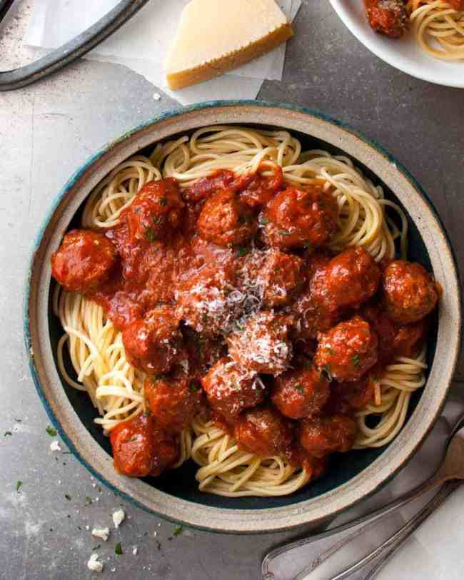

The Mighty Italian Meatballs
The one thing that sets this meatball recipe apart from others? Soak sandwich bread with grated onion. The bread
puffs up when cooked, making these meatballs extra soft and juicy.
Plus it adds extra savoury flavour
without
the need to fry onion separately.

Ingredients
- Soaked bread = soft meatballs: Bread soaked in some form of liquid puffs up when cooked, creating
little air pockets that makes meatballs extra soft. It works far better than ordinary breadcrumbs which
actually has the tendency to make meatballs tough little balls (panko breadcrumbs is ok though), and the
Italians have been doing this for years.
Italians use milk for soaking. I use grated onion – see next point.
- Soak bread in grated onion = better flavour Grating the onions serves a few purposes.
- Flavour: 80% of my recipes start with “sauté onion until golden”. And there’s a reason for that.
Onion is a flavour base that can’t be beaten, and I want it in my meatballs;
- Soaking: it’s the juicy grated onion that is used to soak the bread, rather than milk or water
which is what other recipes use. This way the liquid balance is not thrown out of balance.
- No need to cook onion separatelyIf you use raw diced onion in the meatballs, you run the risk of
having raw onions in them – unless you cook them for longer in which case you risk overcooking the
meatballs!
- No need to finely chop onionbecause unless they are very finely diced, there is a tendency for
the onion to affect how well the meatball holds together. Make your life easier – grate the onion! (Wear
goggles if it makes your eyes water…)

This is how i roll meatballs:
I have often wished for someone to invent a compact meatball rolling device. I have visions of a bike pump type
contraption where you feed the meat into one end and perfectly formed meatballs pop out the other.
If you’re thinking what I think you are – get your mind out of the gutter and just imagine how convenient that
would be!!! üòÇ
But until such time, this is the most efficient way I’ve been able to come up with for rolling meatballs.
Tip: Baking option for meatball
Any of my Meatball recipes can be baked. It’s healthier and they stay nice and round, though they are not quite
as juicy as pan frying (sear = trapped juices).
To bake meatballs, preferably use a rack placed on a tray – helps keep the base more round – then just spray
both the rack and the meatballs generously with oil and bake at 200C/400F for 20 minutes.
Check out full recipe here
!